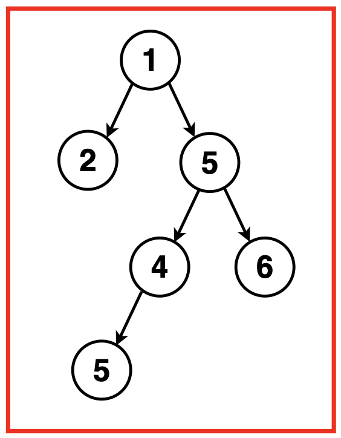
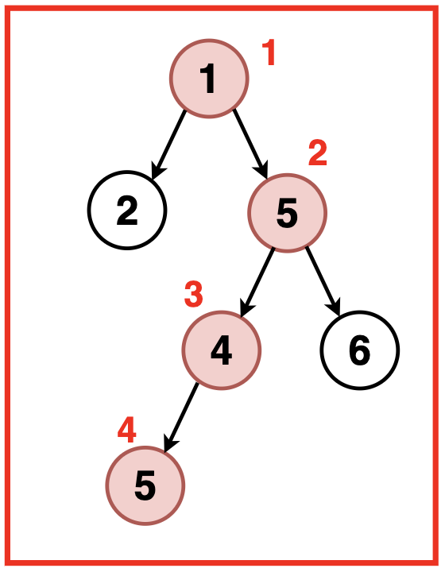
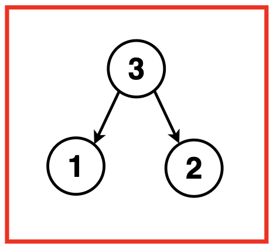
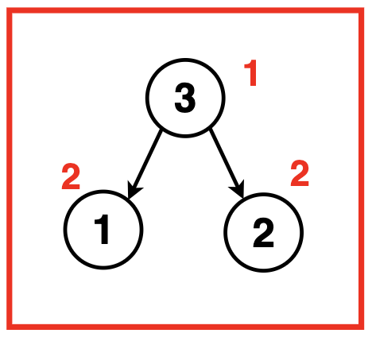
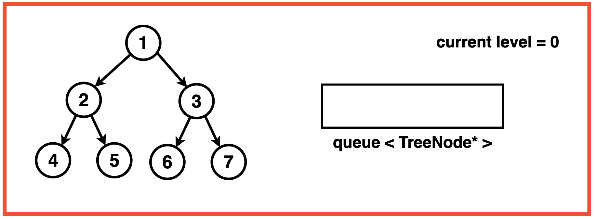
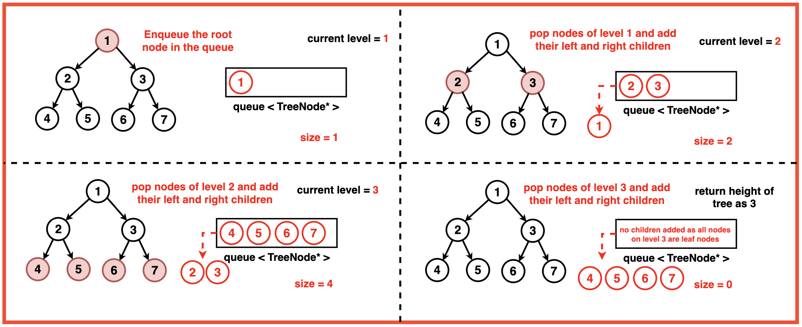

Problem Statement: Given the root of a Binary Tree, return the height of the tree. The height of the tree is equal to the number of nodes on the longest path from root to a leaf.
Examples
Example 1:Input: Binary Tree: 1 2 5 -1 -1 4 6 5Output: 4Explanation: In the above example, the height of the binary tree is along the longest path from the root node 1 -> 5 -> 4 -> 5. Example 2:Input:Binary Tree: 3 1 2
Output : 2Explanation: We traverse the binary tree in the order of Left, RIght then Root recursively resulting in the following traversal:
Disclaimer: Don’t jump directly to the solution, try it out
yourself first.
Optimal Approach
Algorithm / Intuition
To find the maximum depth of the binary tree using level order traversal, we employ a breadth-first approach. Initialise a queue and push the root node. Traverse through the levels and track the depth by counting the number of levels traversed. At each level pop the nodes and push their left and right children, incrementing the depth counter as we explore.This process continues until all levels are traversed at which point the depth variable holds the maximum depth of the tree.
Algorithm:
Step 1: Initialise a queue for level order traversal and a variable `level` to track the depth.Check if the root is null, if so return the answer as 0 indicating an empty tree.

Step 2: Insert the root of the Binary Tree into the queue and set the level as 0.
Step 3: Begin a loop that continues until the queue becomes empty where at each level:
Increment `level` by 1, indicating we are moving to the next level.
Determine the number of nodes at the current level by storing the size of the queue.
Iterate over the number of nodes equal to the size of the queue and at each node, Pop it from front of the queue and push its left and right children (if they exist).

Step 4: After the queue loop gets over, return the `level` variable representing the maximum depth of the tree calculated during the level order traversal.
Code
#include <iostream>
#include <vector>
#include <stack>
using namespace std;
// Node structure for the binary tree
struct Node {
int data;
Node* left;
Node* right;
// Constructor to initialize
// the node with a value
Node(int val) : data(val), left(nullptr), right(nullptr) {}
};
class Solution{
public:
// Function to find the
// maximum depth of a binary tree
int maxDepth(Node* root){
// If the root is NULL
// (empty tree), depth is 0
if(root == NULL){
return 0;
}
// Recursive call to find the
// maximum depth of the left subtree
int lh = maxDepth(root->left);
// Recursive call to find the
// maximum depth of the right subtree
int rh = maxDepth(root->right);
// Return the maximum depth of the
// tree, adding 1 for the current node
return 1 + max(lh, rh);
}
};
// Main function
int main() {
// Creating a sample binary tree
Node* root = new Node(1);
root->left = new Node(2);
root->right = new Node(3);
root->left->left = new Node(4);
root->left->right = new Node(5);
root->left->right->right = new Node(6);
root->left->right->right->right = new Node(7);
Solution solution;
int depth = solution.maxDepth(root);
cout << "Maximum depth of the binary tree: " << depth << endl;
return 0;
}
import java.util.LinkedList;
import java.util.Queue;
// Node class for the binary tree
class Node {
int data;
Node left;
Node right;
// Constructor to initialize
// the node with a value
Node(int val) {
data = val;
left = null;
right = null;
}
}
class Solution {
// Function to find the
// maximum depth of a binary tree
// using level order traversal
int maxDepth(Node root) {
// If the root is NULL
// (empty tree), depth is 0
if (root == null) {
return 0;
}
// Create a queue for
// level order traversal
Queue<Node> q = new LinkedList<>();
int level = 0;
// Push the root node into the queue
q.add(root);
// While there are nodes in the queue
while (!q.isEmpty()) {
// Get the number of nodes
// at the current level
int size = q.size();
// Process all nodes
// at the current level
for (int i = 0; i < size; i++) {
// Get the front node in the queue
Node front = q.poll();
// Enqueue left child if exists
if (front.left != null) {
q.add(front.left);
}
// Enqueue right child if exists
if (front.right != null) {
q.add(front.right);
}
}
// Increment level to
// move to the next level
level++;
}
// Return the level, which represents
// the maximum depth of the tree
return level;
}
}
// Main class
public class Main {
// Main function
public static void main(String[] args) {
// Creating a sample binary tree
Node root = new Node(1);
root.left = new Node(2);
root.right = new Node(3);
root.left.left = new Node(4);
root.left.right = new Node(5);
root.left.right.right = new Node(6);
root.left.right.right.right = new Node(7);
Solution solution = new Solution();
int depth = solution.maxDepth(root);
System.out.println("Maximum depth of the binary tree: " + depth);
}
}
from queue import Queue
# Node class for the binary tree
class Node:
def __init__(self, val):
self.data = val
self.left = None
self.right = None
class Solution:
# Function to find the
# maximum depth of a binary tree
# using level order traversal
def maxDepth(self, root):
# If the root is NULL
# (empty tree), depth is 0
if root is None:
return 0
# Create a queue for
# level order traversal
q = Queue()
level = 0
# Push the root node into the queue
q.put(root)
# While there are nodes in the queue
while not q.empty():
# Get the number of nodes
# at the current level
size = q.qsize()
# Process all nodes
# at the current level
for i in range(size):
# Get the front node in the queue
front = q.get()
# Enqueue left child if exists
if front.left is not None:
q.put(front.left)
# Enqueue right child if exists
if front.right is not None:
q.put(front.right)
# Increment level to
# move to the next level
level += 1
# Return the level, which represents
# the maximum depth of the tree
return level
# Creating a sample binary tree
root = Node(1)
root.left = Node(2)
root.right = Node(3)
root.left.left = Node(4)
root.left.right = Node(5)
root.left.right.right = Node(6)
root.left.right.right.right = Node(7)
solution = Solution()
depth = solution.maxDepth(root)
print("Maximum depth of the binary tree:", depth)
// Node class for the binary tree
class Node {
constructor(val) {
this.data = val;
this.left = null;
this.right = null;
}
}
class Solution {
// Function to find the
// maximum depth of a binary tree
// using level order traversal
maxDepth(root) {
// If the root is NULL
// (empty tree), depth is 0
if (root === null) {
return 0;
}
// Create a queue for
// level order traversal
const q = [];
let level = 0;
// Push the root node into the queue
q.push(root);
// While there are nodes in the queue
while (q.length > 0) {
// Get the number of nodes
// at the current level
const size = q.length;
// Process all nodes
// at the current level
for (let i = 0; i < size; i++) {
// Get the front node in the queue
const front = q.shift();
// Enqueue left child if exists
if (front.left !== null) {
q.push(front.left);
}
// Enqueue right child if exists
if (front.right !== null) {
q.push(front.right);
}
}
// Increment level to
// move to the next level
level++;
}
// Return the level, which represents
// the maximum depth of the tree
return level;
}
}
// Creating a sample binary tree
const root = new Node(1);
root.left = new Node(2);
root.right = new Node(3);
root.left.left = new Node(4);
root.left.right = new Node(5);
root.left.right.right = new Node(6);
root.left.right.right.right = new Node(7);
const solution = new Solution();
const depth = solution.maxDepth(root);
console.log("Maximum depth of the binary tree:", depth);
Output
Maximum depth of the binary tree: 5
Complexity Analysis
Time Complexity: O(N) where N is the number of nodes in the Binary Tree. This complexity arises from visiting each node exactly once during the traversal to determine the maximum depth.
Space Complexity: O(N) where N is the number of nodes in the Binary Tree because in the worst case scenario the tree is balanced and has N/2 nodes in its last level which will have to be stored in the queue.
Video Explanation
Special thanks to Gauri Tomar for contributing to this article on takeUforward. If you also wish to share your knowledge with the takeUforward fam, please check out this article